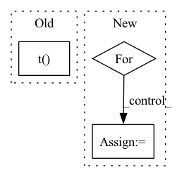

Pattern ID :29138
Before Change
if "whamr" in self.hparams.data_folder:
targets = self.hparams.reverb(
targets[0].t() , torch.ones(targets.size(-1))
)
targets = targets.t().unsqueeze(0)
mix = targets.sum(-1)After Change
if "whamr" in self.hparams.data_folder:
mix = 0
for mic in rirs:
// rir_cat = torch.flip(torch.stack(mic), [1]).unsqueeze(0)
rir_cat = (torch.stack(mic)).unsqueeze(0)
rir_cat = rir_cat.to(self.device)
mix = mix + F.conv1d(
targets.permute(0, 2, 1), rir_catIn pattern: SUPERPATTERN
Frequency: 4
Non-data size: 3
Instances Fragment ID: 85809117
Project Name: speechbrain/speechbrain
Commit Name: 59bc3bf412dc5c1c2e9baf687ede623cc1c4c588
Time: 2021-03-19
Author: csubakan@gmail.com
File Name: recipes/WSJ0Mix/separation/train.py
M Class Name: Separation
N Class Name: Separation
M Method Name: compute_forward(6)
N Method Name: compute_forward(5)
M Parent Class: sb.Brain
N Parent Class: sb.Brain
M File Name: recipes/WSJ0Mix/separation/train.py
N File Name: recipes/WSJ0Mix/separation/train.py
M Start Line: 50
M End Line: 65
N Start Line: 42
N End Line: 79
Before Change
if "whamr" in self.hparams.data_folder:
targets = self.hparams.reverb(
targets[0].t() , torch.ones(targets.size(-1))
)
targets = targets.t().unsqueeze(0)
mix = targets.sum(-1)After Change
if "whamr" in self.hparams.data_folder:
mix = 0
for mic in rirs:
// rir_cat = torch.flip(torch.stack(mic), [1]).unsqueeze(0)
rir_cat = (torch.stack(mic)).unsqueeze(0)
rir_cat = rir_cat.to(self.device)
mix = mix + F.conv1d(
targets.permute(0, 2, 1), rir_cat
)
mix = mix.squeeze(1) Fragment ID: 85809116
Project Name: speechbrain/speechbrain
Commit Name: 59bc3bf412dc5c1c2e9baf687ede623cc1c4c588
Time: 2021-03-19
Author: csubakan@gmail.com
File Name: recipes/WSJ0Mix/separation/train.py
M Class Name: Separation
N Class Name: Separation
M Method Name: compute_forward(6)
N Method Name: compute_forward(5)
M Parent Class: sb.Brain
N Parent Class: sb.Brain
M File Name: recipes/WSJ0Mix/separation/train.py
N File Name: recipes/WSJ0Mix/separation/train.py
M Start Line: 50
M End Line: 65
N Start Line: 42
N End Line: 79
Before Change
current_rel = valid_spo_all[:, 1] == r
true_labels = y_valid[current_rel].view(-1)
predictions = (
X_valid[current_rel].view(-1, 1) >= X_valid[current_rel].view(1, -1)
).t()
accuracies = (predictions == true_labels).float().sum(dim=1)
accuracies_max = accuracies.max()
After Change
// also set a global threshold for relations unseen in valid set
thresholds[REL_KEY] = get_threshold(X_valid, y_valid)
for r in test_relations: // get predictions based on validation thresholds
key = r.item() if r.item() in thresholds else REL_KEY
threshold = thresholds[key]
current_rel = test_spo_all[:, 1] == r
predictions = X_test[current_rel] >= threshold Fragment ID: 85809109
Project Name: tsafavi/codex
Commit Name: c95e36e54a106a4920017ba8aeb86d8841170921
Time: 2020-07-23
Author: tsafavi@umich.edu
File Name: scripts/tc.py
M Class Name: AnonimousClass
N Class Name: AnonimousClass
M Method Name: main(0)
N Method Name: main(0)
M Parent Class:
N Parent Class:
M File Name: scripts/tc.py
N File Name: scripts/tc.py
M Start Line: 170
M End Line: 232
N Start Line: 200
N End Line: 235
Before Change
// pos [num, num_priors]
// conf_data [num, num_priors, feature_dim]
conf_data = conf_data / torch.norm(conf_data, dim=2, keepdim=True) // [num, num_priors, feature_dim]
batch_conf = conf_data.view(-1, self.num_classes).mm(self.imprinted_matrix.t() ) * self.scale // [n_way, num_classes]
// Compute max conf across batch for hard negative mining (logit-combined)
batch_obj = obj_data.view(-1, 2) // [n_way*n_shot*num_priors, 2]After Change
// pos [num, num_priors]
// conf_data [num, num_priors, feature_dim]
features = [conf_data.view(-1, self.num_classes)]
for i in range(3):
new_features = (self.denselayer1, self.denselayer2, self.denselayer3)[i](*features)
features.append(new_features)
batch_conf = new_features * self.scale // [n_way, num_classes]
Fragment ID: 85809111
Project Name: ze-yang/context-transformer
Commit Name: fdad2f0570a1a57d0925ef2ff8b6a15611f910b5
Time: 2019-03-08
Author: 981435961@qq.com
File Name: layers/modules/multibox_loss_combined_imprinted.py
M Class Name: MultiBoxLoss_combined
N Class Name: MultiBoxLoss_combined
M Method Name: forward(4)
N Method Name: forward(4)
M Parent Class: nn.Module
N Parent Class: nn.Module
M File Name: layers/modules/multibox_loss_combined_imprinted.py
N File Name: layers/modules/multibox_loss_combined_imprinted.py
M Start Line: 71
M End Line: 107
N Start Line: 108
N End Line: 112
Before Change
// gess direction
direct = 1 // or -1 if CA is berfore
if direct:
phis = torch.vstack(torch.tensor([None for i in range(len(N_mask))])).t()
else:
phis = torch.vstack(torch.tensor([None for i in range(len(N_mask))])).t()
// calc number of negatives and return the highest mirror
neg_phis = (phis < 0).long().sum(axis=-1)After Change
cs = preds.t(-1, -2)[CA_mask].detach()
// compute phis and count lower than 0s
phis_count = []
for i in range(cs.shape[0]):
phis = []
for j in range(1, cs.shape[1]-1):
phis.append( get_dihedral_torch(cs[i,j-1], ns[i,j], cs[i,j], n[i,j+1], cs[i,j+1]) )
phis_count.append( (torch.tensor(phis)<0).float().sum() ) Fragment ID: 85809110
Project Name: lucidrains/alphafold2
Commit Name: 1b677161a6a5c024c430e8726702cb132d7175d7
Time: 2021-01-06
Author: ericacaide1@gmail.com
File Name: utils.py
M Class Name: AnonimousClass
N Class Name: AnonimousClass
M Method Name: fix_mirrors_torch(3)
N Method Name: fix_mirrors_torch(3)
M Parent Class:
N Parent Class:
M File Name: utils.py
N File Name: utils.py
M Start Line: 147
M End Line: 154
N Start Line: 147
N End Line: 157